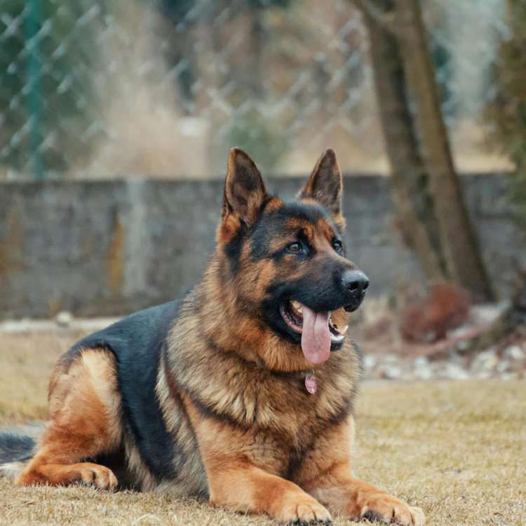

Meet the German Shepherd, a breed renowned for its intelligence, strength, and loyalty. Originally from Germany, German Shepherds have become one of the most popular and versatile dogs in the world. Known for their roles in police and military work, these dogs are also excellent family pets and companions. This article will explore the unique characteristics and history of the German Shepherd dog.
The German Shepherd dog (GSD) was developed in the late 19th century by Captain Max von Stephanitz, who aimed to create the perfect working dog. By selectively breeding herding dogs, he produced a breed that excelled in intelligence, trainability, and work ethic. The German Shepherd quickly gained recognition and was used extensively in both World Wars for various tasks, including messenger duties, rescue operations, and guard work.
German Shepherds are large, strong dogs with an athletic build. They typically stand between 22-26 inches tall at the shoulder and weigh between 50-90 pounds. Their coat can come in a variety of colors, including black and tan, black and red, sable, and even all black or all white. The breed’s double coat is dense and water-resistant, providing excellent protection in various weather conditions.
German Shepherds are known for their loyalty, courage, and confidence. They are highly intelligent and trainable, making them suitable for a wide range of roles, from family pets to working dogs in police, military, and search and rescue operations. German Shepherds are also protective of their families and can be reserved with strangers, making them excellent guard dogs. Early socialization and training are essential to ensure they develop into well-rounded and obedient companions.
German Shepherds are active and energetic dogs that require regular exercise to stay healthy and happy. They thrive on physical activities such as running, hiking, and playing fetch. Mental stimulation is equally important, and activities like obedience training, agility courses, and puzzle toys can keep their minds sharp. Regular exercise helps prevent behavioral issues and ensures they remain well-adjusted family members.
German Shepherds typically have a lifespan of 9-13 years. Like all breeds, they can be prone to specific health issues. Common conditions include hip and elbow dysplasia, degenerative myelopathy, and certain heart diseases. Regular veterinary check-ups, a balanced diet, and maintaining an active lifestyle are crucial for keeping German Shepherds healthy. Responsible breeding practices also help reduce the risk of genetic disorders.
Training and socialization are vital for German Shepherd puppies. Early exposure to different environments, people, and other animals helps them develop into confident and well-behaved adults. German Shepherds respond well to positive reinforcement training methods, which reward good behavior with treats and praise. Consistent and firm training helps channel their energy and intelligence in a positive direction.
Versatile Working Dog: German Shepherds are renowned for their versatility and are often employed in various roles, including police work, search and rescue, and as service dogs. This versatility sets them apart from other herding breeds like the Border Collie, which is primarily known for its exceptional herding abilities.
Intelligence and Trainability: German Shepherds are highly intelligent and trainable, ranking just behind Border Collies in intelligence among dog breeds. This makes them excellent for complex tasks and obedience training, whereas other herding breeds like the Australian Shepherd are also intelligent but may require a more experienced handler due to their independent streak.
Protective Nature: One of the standout traits of German Shepherds is their protective nature. They are naturally inclined to guard their families and property, making them excellent watchdogs. In contrast, breeds like the Shetland Sheepdog, while alert and responsive, are generally less protective and more reserved around strangers.
Diverse Colors: German Shepherds come in a variety of colors, including black and tan, sable, and all-black. This contrasts with the Border Collie, which typically has a black and white coat, though they can also come in other color combinations.
Strong Build: German Shepherds have a robust and muscular build, making them suitable for demanding physical tasks. This physical strength is often compared to the leaner build of Border Collies, which are built more for speed and agility in herding.
Long Lifespan: The average lifespan of a German Shepherd is around 9-13 years. This is slightly shorter than some other herding breeds like the Australian Shepherd, which can live up to 15 years. However, with proper care and regular veterinary check-ups, German Shepherds can lead long, healthy lives.
German Shepherds are exceptional dogs that combine intelligence, loyalty, and versatility. Whether as working dogs or beloved family pets, their unique qualities make them stand out among other breeds. With proper training, socialization, and care, a German Shepherd can be a loyal and devoted companion for years to come. If you’re looking for a dog that embodies strength, courage, and companionship, the German Shepherd might be the perfect choice for you.
If you have doubts about choosing between a collar or harness for your furry friend, you can refer to the following article:
If you have questions about brushing your dog’s teeth or using dental chews, you can refer to the article: